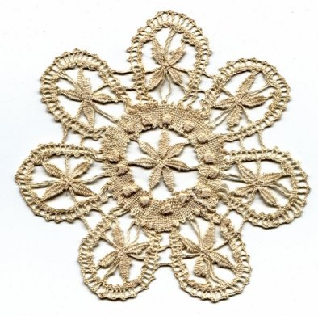

Hôtel ** RESTAURANT
LE BILBOQUET
LE BILBOQUET
")
, Internet WiFi gratuit, soirée étape, parking, chambres familles (Le Puy-en-Velay, Haute-Loire, 43)")

Randonnées et Tourisme
Célèbre ville mariale au Sud-Est du Massif Central, point de départ
du Pèlerinage vers St Jacques de Compostelle, Le Puy-en-Velay
est avant tout un site exceptionnel.
Vous y découvrirez :
- sa Cathédrale, inscrite au Patrimoine Mondial de l'Humanité;, par L'UNESCO
- son cloître du XIIième siècle
- la Statue Notre Dame de France
- le rocher de la Chapelle St Michel, ...
- sa Cathédrale, inscrite au Patrimoine Mondial de l'Humanité;, par L'UNESCO
- son cloître du XIIième siècle
- la Statue Notre Dame de France
- le rocher de la Chapelle St Michel, ...
")

Le Puy-en-Velay est aussi célèbre pour :
- sa dentelle
- sa lentille verte
- la verveine, fameuse liqueur digestive
- sa dentelle
- sa lentille verte
- la verveine, fameuse liqueur digestive